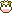
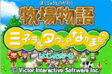
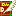
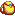
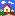
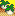
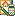
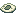

Para jogar Friends of Mineral Town voce vai precisar do cartucho do jogo and um Game Boy Advance (Tradicional ou SP). Se voce planeja ter Luu ou Ban visite sua cidade e voce tambem vai precisar de um Gamecube, uma copia de Wonderful Life e o Gamecube/GBA Link Cable/Cabo Link. Desculpe,o Gamecube nao inclui o jogo tambem.
|  Quando voce comecaa jogar FoMT voce pode escolher comecar um novo jogo ou recomecar de um savegame que voce salvou. Se voce escolher comecar um novo jogo, a primeira coisa que voce tem que fazer e da um nome para voce mesmo. Depois de confirmar a escolha do seu nome, selecione a data do seu aniversario. Voce seleciona a estacao que voce quer para seu aniversario, depois escolha um dos 30 dias que voce quiser. A proximacoisa que voce precisa e da um nome a sua fazenda. Quando voce terminar de preencher o nome da sua fazenda, escolha um nome para seu cachorro. A ultima tela voce chegara para confirmar tudo o que voce escolheu. Confirme para continuar ou escolha "no/nao" para comecar de novo. |
| GBA Controle | |
|---|---|
| Start | traz a janela do menu em baixo da tela |
| Select | Sumario da fazenda. Voce pode ver quanto dinheiro voce tem, os niveis das suas ferramentas, as habilidades dos Harvest Sprites/Duendes da Colheita e quanto voce esta lucrando. |
| Controle Direcinal | Ande para cima, baixo, esquerda e direita. Voce pode navegar atraves do menu tambem; esquerda e direita trocara de telas enquanto que cima e baixo vai rolar a barra do grande texto. |
| R Direita | Segurando o botao R Direita faz o personagem correr |
| L Esquerda | Assobia para o seu cachorro e cavalo. Voce tambem pode assobiar para garotas! |
| Botao A | Pegue coisas como frutos da sua plantacao ou seu cachorro. Para falar com os aldeoes caminha para cima deles e aperte "A". Voce tambem pode usar esse botao para confimar escolhas. |
| Botao B | Usa a ferramenta que voce estsequipado. Para sair do menu aperte "B" tambem. |
| A + B | Abre sua mochila sem ter que apertar "START" para chegara janela do menu. |
| L Esquerda + B | Da um giro pelas suas ferramentas que voce tem na sua mochila. Se voce esta segurando um item perecivel (Comida e etc...), "L Esquerda + B" vai fazer voce comer este item. Voce tambem pode da um giro pelas suas ferramentas segurando "L ESQUERDA" e depois apertando "DIREITA" ou "ESQUERDA" no controle direcional. |
| L Esquerda + A | Da um giro pelos seus items que voce tem na mochila, como vegetais ou presentes para as garotas. Voce pode escolher seus items segurando "R Direita" e apertando "ESQUERDA/LEFT" ou "DIREITA/RIGHT" no controle direcional. |
| L Esquerda + Select | Mostra o mapa da fazenda sem ter que ir para a janela do Menu. |
| L Esquerda + Start | Mostra o mapa do mundo do jogo. |
A janela do menu vai aparecer em baixo da sua tela quando apertar o botao "START". Ha 7 opcoes de menu que voce pode escolher:
Diario: salvar seu jogo selecione a primeira escolha do menu. Voce pode ter 2 jogos salvos e voce pode salvar a qualuqer hora.Nao ha necessidade de ir a cama/dormir para salvar, apesar de que ha um livro proximo a cama que mostrara esse menu tambem. Voce pode tambem carregar um jogoa nteriormente salvo. A proxima opcao e o autorun/execucao automatica; #1 tem que caminhar pelo controle direcional e apertar o botao R direito. Opcao #2 va para o R Direito e rode qualquer controle direcional que voce apertar. O Ultimo das 3 opcoes liga e desliga o relogio, o retrato do personagem liga e desliga e mostrar os nomes dos personagens mostrar ou nao mostrar(ON/OFF).
Mochila: Qualquer ferramenta ou itens que voce pode carregar vai para dentro da sua mochila. Para trocar de ferramenta selecione a ferramenta que voce quer equipar da mochila eentao coloque no slot do topo. A mesma tecnica e usada se voce quiser pegar um item da sua mochila. As ferramentas serao disponbilizadas da metada da esquerdada tela eos itens no lado direito.
Mapa do Mundo do Jogo: Abrindo o Mapa do mundo do jogo traz um cursor em forma de mao. Voce pode mover o cursor pelo mapa para ter um pouco de informacao especifica detalhada das areas. Se voce nao consegue encontrar onde a "Grocery Store" esta quando voce comeca o jogo, cheque o Mapa do Mundo do jogo.
Mapa da Fazenda: Este menu e muito util se voce ja tentou trazer seu cachorro em uma noite so para descobrir que voce nao consegue encontra-lo. Abra o Mapa da Fazenda e voce vai ver tudo que esta na terra da sua fazenda. Cada animal e planta esta marcado com um pequeno icone entao voce pode facilmente encontrar o que esta procurando.
Ganhos: Este e o mesmo menu que aparece quando voce aperta o botao "SELECT". Voce vera quanto diheiro gahou, as habilidades dos duendes da colheita/Harvest Sprites, informacao sobre seus animais e niveis das ferramentas.
Vendas Memorizadas: Qualquer coisa que voce pode entregar para Zack esta listado aqui. Voce pode ver quantos de cada plantacao voce entregou e informacoes sobre o tipo de peixe que voce pescou. Uma das telas que da a voce o sumario a melhor pontuacao que voce tem com os Duendes da Colheita/Harvests Sprites no minigame deles e o mais longe que voce chegou no minigame frisbee Disc. Voce pode tambem ver quanto dinheiro poupou and gastou por diae por estacao. Ate mesmo o nivel mais longe que voce alcancou nas minas estao aqui.
Aprender/Tutoriais: Se voce precisa aprender como fazer algo, cheque os tutoriais. tem um para como plantar, por cuidar de animais (Vacas, galinhas e ovelhas) e mais um que explica um pouco as janelas do menu. Estes sao os mesmos tutoriais que o Prefeito Thomas/Mayor Thomas mostra a voce quando comeca o jogo.